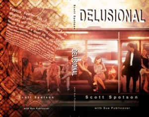

From the journal
Loved the Mystery in this Book
http://thereadingbud.com/2015/06/01/book-review-delusional/
To see more, go to the website....
Plot/Story:
I must say that this story was surprisingly quick read and even though I am not must a fan of Romance based stories, this story did made me fell in-love with the story and the characters. At first you have two storied that slowly being combined together. From the beginning of the story you are kept in suspense of who is the thief of the Hope diamond and why or how Patricia has her hallucinations and delusions.Characters:
The characters are well written and well plotted out. The author placed so much thought and care for the characters that as a reader you get deeply involved with their lives and thoughts.Romance/Kills:
This book has forbidden love of Patricia and Paul, passion and violence all written in such a way that left you thinking of what will happen next.To see more, go to the website....

